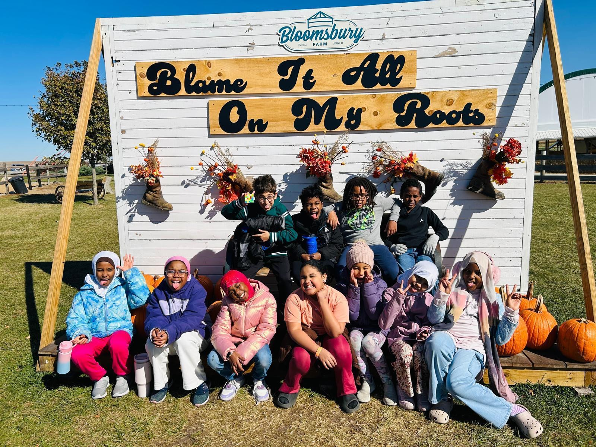
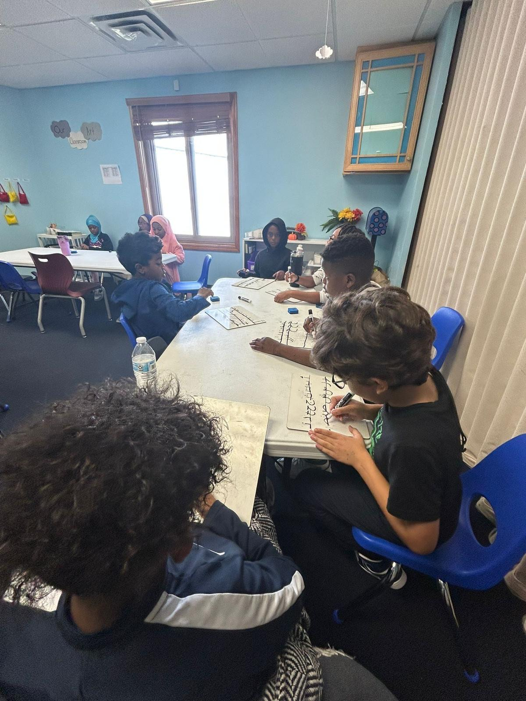
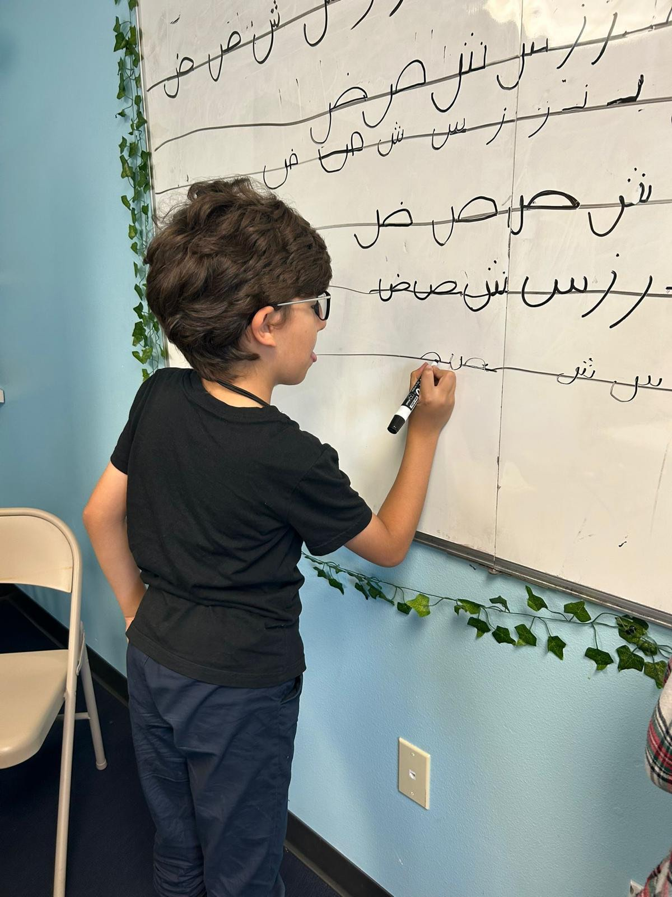
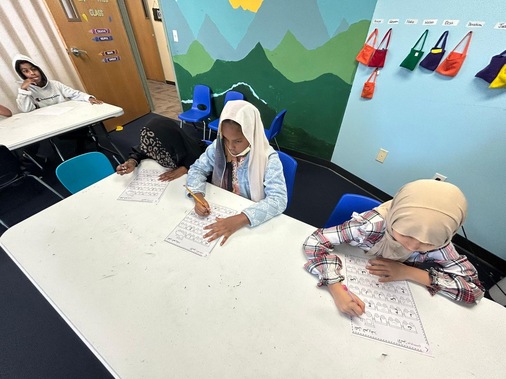

An education families can trust, in a community that already feels like theirs

01 — Academic Excellence
Rigorous, accredited, and personal
Students follow a fully accredited academic program with live daily instruction — not pre-recorded lessons. Small proctor-supervised groups and one-on-one tutoring in Math, Science, and ELA mean no student gets lost in the crowd.

02 — Islamic Values, Lived Daily
Faith woven into the school day
Islamic studies aren't an add-on period — they're part of the daily rhythm. Qur'an, Arabic, Fiqh, and Tarbiyah are taught inside the Masjid itself, by instructors who model the values they teach.

03 — Teachers Who Know Your Child
Small enough to notice everything
Our staff and faculty are drawn from the Masjid community itself. They know students by name, track their progress closely, and treat families as partners rather than spectators.
04 — Whole-Child Development
Growing beyond the classroom
Art, physical education, life-skills instruction, field trips, and extracurriculars round out a school day built to develop confident, capable, grounded young people — not just good test scores.
In Their Words